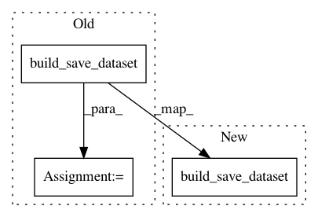

fae4d620ff94113e9c0cb2cd4e71e46635b79aa9,preprocess.py,,main,#Any#,105
Before Change
tgt_reader = inputters.str2reader["text"].from_opt(opt)
logger.info("Building & saving training data...")
train_dataset_files = build_save_dataset(
"train", fields, src_reader, tgt_reader, opt)
if opt.valid_src and opt.valid_tgt:
logger.info("Building & saving validation data...")
build_save_dataset("valid", fields, src_reader, tgt_reader, opt)
After Change
tgt_reader = inputters.str2reader["text"].from_opt(opt)
logger.info("Building & saving training data...")
build_save_dataset(
"train", fields, src_reader, tgt_reader, opt)
if opt.valid_src and opt.valid_tgt:
logger.info("Building & saving validation data...")
build_save_dataset("valid", fields, src_reader, tgt_reader, opt)
In pattern: SUPERPATTERN
Frequency: 3
Non-data size: 3
Instances
Project Name: OpenNMT/OpenNMT-py
Commit Name: fae4d620ff94113e9c0cb2cd4e71e46635b79aa9
Time: 2019-05-16
Author: francois.hernandez.fh@gmail.com
File Name: preprocess.py
Class Name:
Method Name: main
Project Name: OpenNMT/OpenNMT-py
Commit Name: a0095fa2c6e5c91029ba9bdb27677011e8dc0e4f
Time: 2018-10-11
Author: justinchiu@users.noreply.github.com
File Name: preprocess.py
Class Name:
Method Name: main
Project Name: OpenNMT/OpenNMT-py
Commit Name: fae4d620ff94113e9c0cb2cd4e71e46635b79aa9
Time: 2019-05-16
Author: francois.hernandez.fh@gmail.com
File Name: onmt/tests/test_preprocess.py
Class Name: TestData
Method Name: dataset_build